13 de octubre 2026
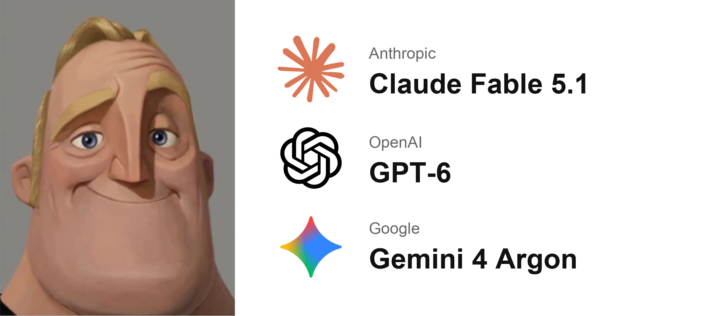
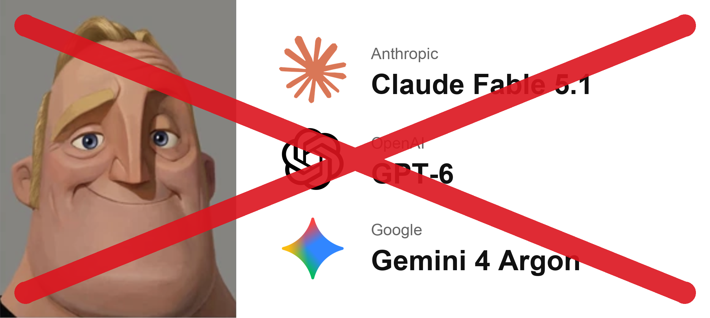
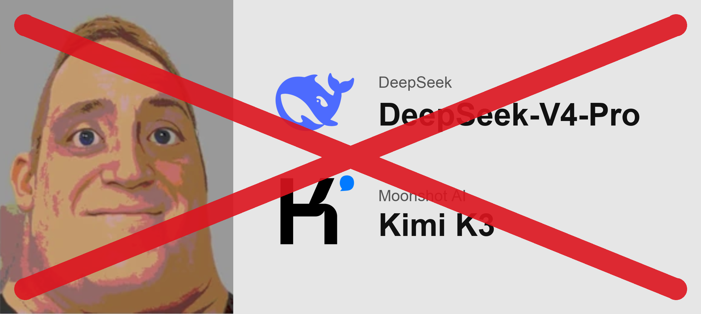
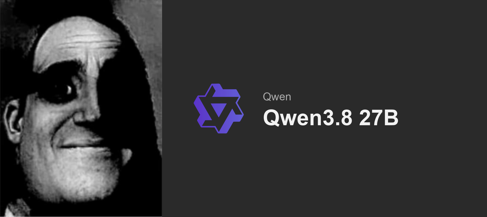
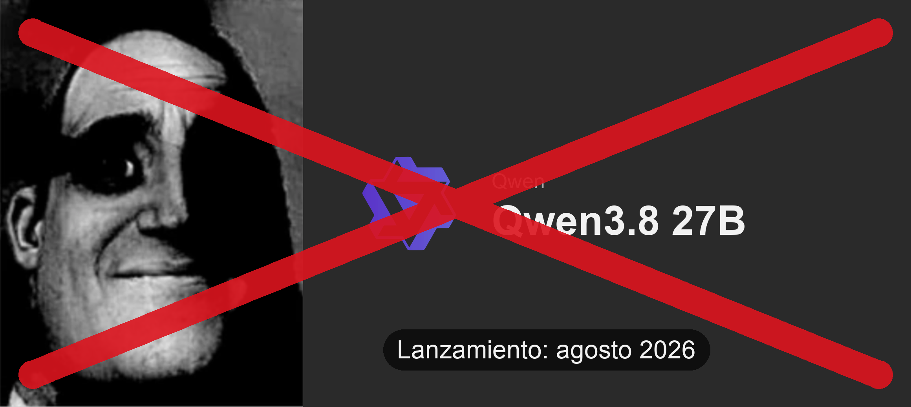
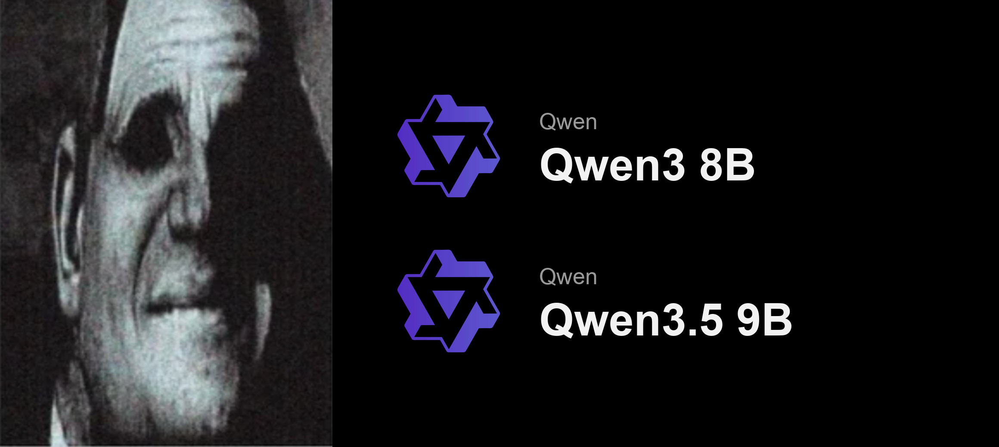
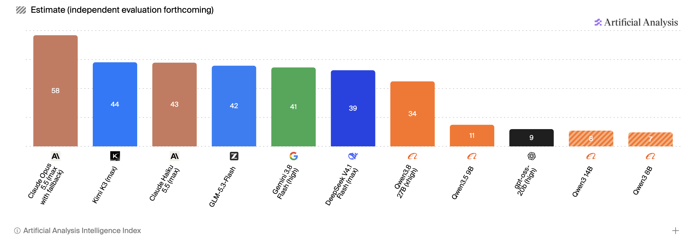
Generamos tres componentes principales que interactúan entre sí:
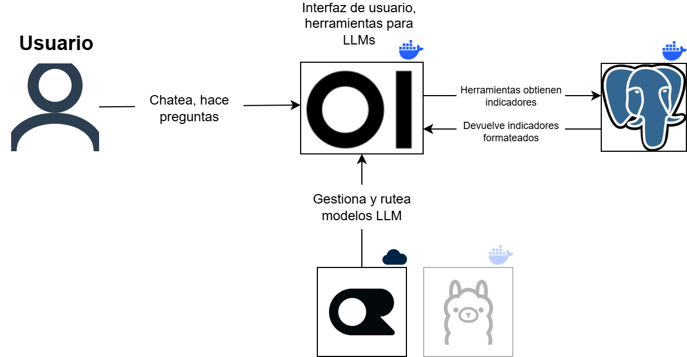
Las herramientas son la pieza clave para que esta arquitectura funcione.
No es más que código de Python que la LLM puede correr para obtener cierto resultado.
El desafío consiste en que la LLM entienda cuándo y cómo correr este código y que el código mismo solo pueda correrse de forma segura.
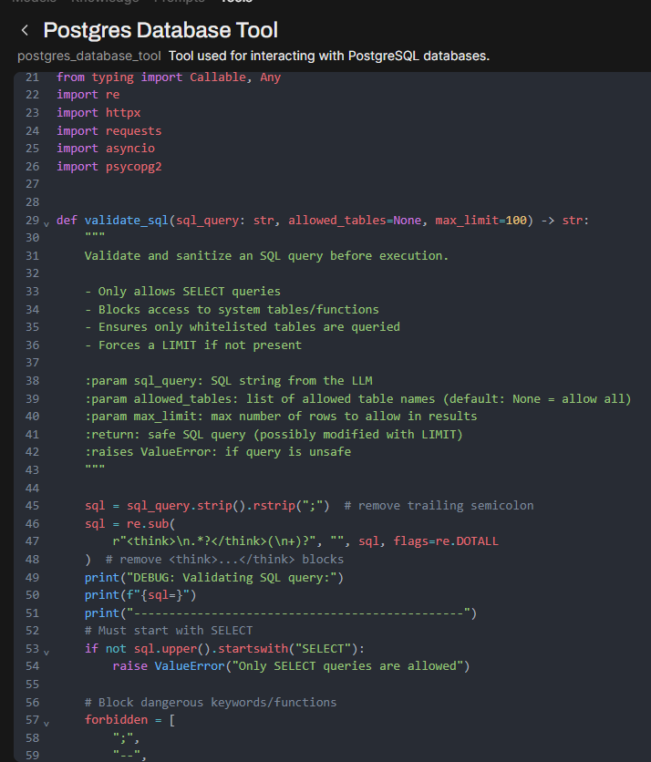
Empleo:
Seguridad:
Un vistazo a los datos
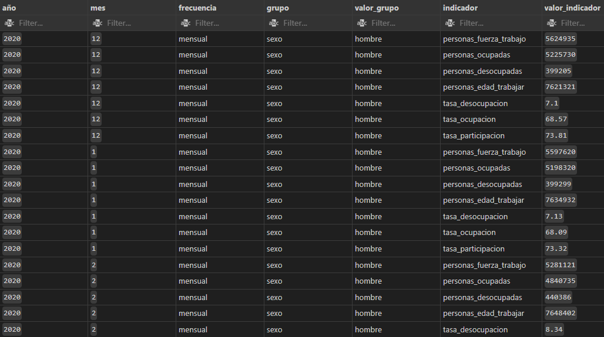
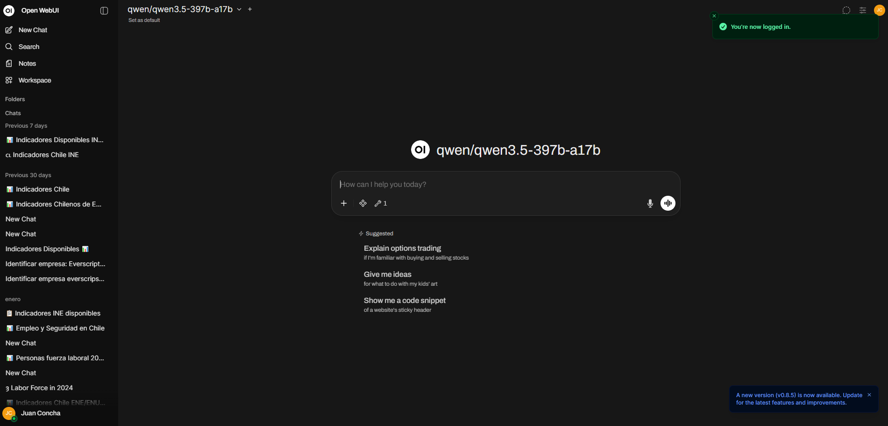
En el contexto de este proyecto, contábamos con ~20k tokens antes de que el rendimiento se degradara, por lo que había que ser extremadamente cuidadoso con qué le pasábamos al modelo y qué no.
Modelos actuales pueden manejar hasta 1M de tokens en su contexto, pero ya en torno a los 300k-400k empiezan a degradarse notablemente.
Es recomendable ir monitoreando cuánto contexto estamos consumiendo:
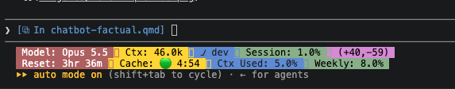
## Available Tools
**Postgres Database Tool** with three functions:
1. **get_indicator_metadata()** - Returns all available indicators with descriptions and grouping options
2. **execute_query()** - Converts natural language to SQL and returns results
3. **instruct_llm_to_generate_sql()** - Internal use by execute_query
## Tool Usage Workflow
1. **If query is off-topic** → Explain your purpose and suggest examples like "unemployment rate in 2024" or "crime trends in Valparaíso"
2. **If unsure what data exists** → Use `get_indicator_metadata()`
3. **If user requests specific data** → Use `execute_query()`
4. **IMPORTANT**: If you use `get_indicator_metadata()` and find the indicator exists, you MUST follow up with `execute_query()` to fetch actual data
## Data Filtering
**Geographic filters:**
- National: `grupo = 'nacional'`
- By sex: `grupo = 'sexo' AND valor_grupo IN ('hombre', 'mujer')`
- By region: `grupo = 'region' AND valor_grupo = '<REGION_NAME>'`. For all regions: `grupo = 'region' `
**Region names:**
Arica y Parinacota, Tarapacá, Antofagasta, Atacama, Coquimbo, Valparaíso, Metropolitana, O'Higgins, Maule, Ñuble, Biobío, Araucanía, Los Ríos, Los Lagos, Aysén, Magallanes
**Time filters:**
- Monthly: `frecuencia = 'mensual'`
- Annual: `frecuencia = 'anual' `
## IMPORTANT: available indicators
Personas en la fuerza de trabajo, personas ocupadas, personas desocupadas,
personas en edad de trabajar, tasa de desocupación, tasa de ocupación y tasa de participación.
Además, percepción de aumento de la delincuencia en el país,
victimización de hogares por delitos de mayor connotación social, victimización de hogares por
delitos violentos y victimización de personas por delitos violentos, variación del IPC en
12 meses y variación mensual del IPC.
get_indicator_metadata para obtener más datos de cómo consultar un indicador específico.get_indicator_metadata ya puede consultar el indicador en paz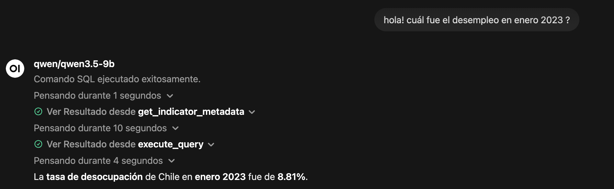
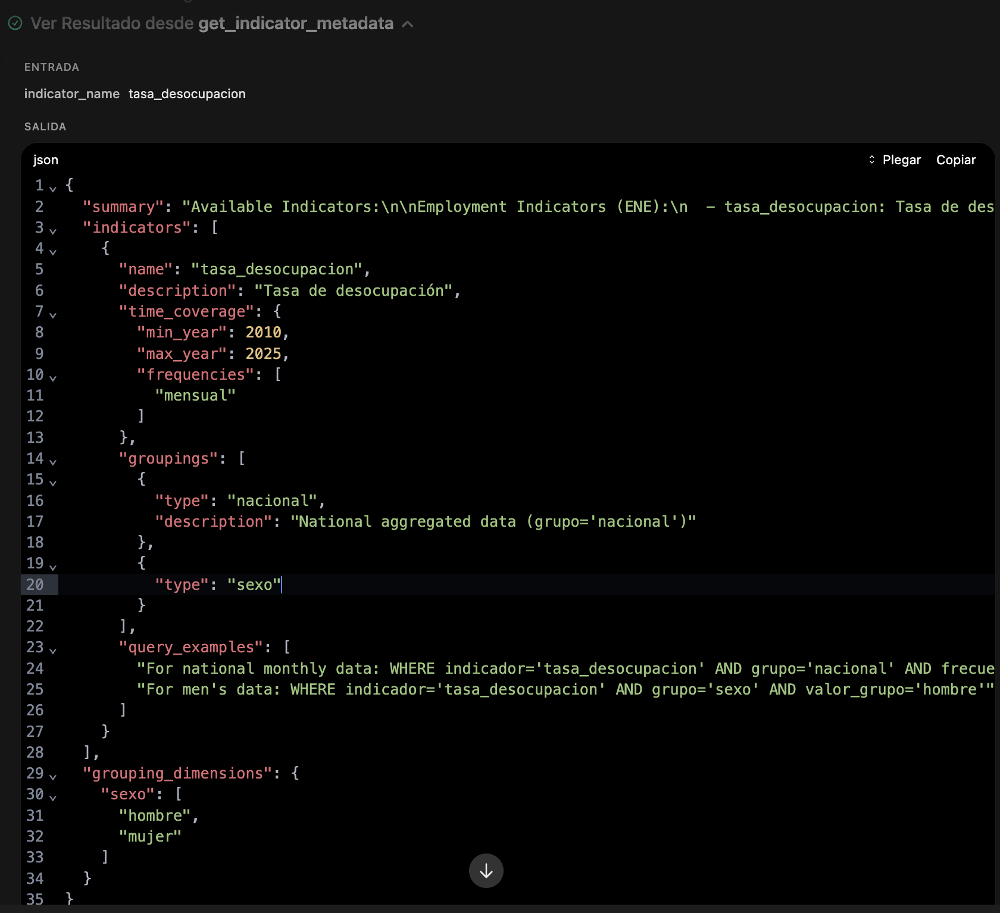
## Available Tools
**Postgres Database Tool** with three functions:
1. **get_indicator_metadata()** - Returns all available indicators with descriptions and grouping options
2. **execute_query()** - Converts natural language to SQL and returns results
3. **instruct_llm_to_generate_sql()** - Internal use by execute_query
## Tool Usage Workflow
1. **If query is off-topic** → Explain your purpose and suggest examples like "unemployment rate in 2024" or "crime trends in Valparaíso"
2. **If unsure what data exists** → Use `get_indicator_metadata()`
3. **If user requests specific data** → Use `execute_query()`
4. **IMPORTANT**: If you use `get_indicator_metadata()` and find the indicator
exists, you MUST follow up with `execute_query()` to fetch actual data.
## Data Filtering
**Geographic filters:**
- National: `grupo = 'nacional'`
- By sex: `grupo = 'sexo' AND valor_grupo IN ('hombre', 'mujer')`
- By region: `grupo = 'region' AND valor_grupo = '<REGION_NAME>'`. For all regions: `grupo = 'region' `
**Region names:**
Arica y Parinacota, Tarapacá, Antofagasta, Atacama, Coquimbo, Valparaíso, Metropolitana, O'Higgins, Maule, Ñuble, Biobío, Araucanía, Los Ríos, Los Lagos, Aysén, Magallanes
**Time filters:**
- Monthly: `frecuencia = 'mensual'`
- Annual: `frecuencia = 'anual' `
## IMPORTANT: available indicators
Personas en la fuerza de trabajo, personas ocupadas, personas desocupadas,
personas en edad de trabajar, tasa de desocupación, tasa de ocupación y tasa de participación.
Además, percepción de aumento de la delincuencia en el país,
victimización de hogares por delitos de mayor connotación social, victimización de hogares por
delitos violentos y victimización de personas por delitos violentos, variación del IPC en
12 meses y variación mensual del IPC.
Respecto a nuestro día a día, mucho de esto se aplica de forma automatizada: skills y MCPs solo leen la metadata con la descripción del skill, hasta que la llaman. Solo en ese momento entra en contexto el skill completo.
Sin embargo, cuando las documentaciones se extienden puede ser conveniente generar subdocumentaciones y punteros a ellas en las documentaciones más grandes.
Ejemplo: CLAUDE.md/AGENTS.md empieza a estar demasiado cargado de instrucciones de todo tipo (UI, cómo correr modelos, cómo funciona el backend, errores clásicos, etc).
docs/ con estas documentaciones más específicas y luego poner instrucciones como “para temas de UI: docs/gestionar_ui.md”.CLAUDE.md/AGENTS.md en subcarpetas: estos los va a leer el agente solo cuando lea, escriba o edite un archivo en esa subcarpeta.El espíritu de esto es que finalmente el agente tenga idealmente solo la información necesaria para trabajar, minimizando ruido innecesario.
Cuando armamos flujos de trabajo, skills o gemas puede ser tentador darle toda la responsabilidad al agente.
Sin embargo, existen dos problemas con esto:
Mientras más instrucciones le damos a un agente, más probable es que no pueda seguirlas todas bien (sumado a que más instrucciones, colapsan más el contexto). A esto se le llama “presupuesto de atención”.
=> queremos minimizar instrucciones a seguir, dentro de lo posible.
Nunca deberíamos resolver estocásticamente algo que se puede resolver bien y a bajo costo determinísticamente (con scripts, básicamente).
Ejemplo:
Una de las herramientas del chatbot es una función validate_sql, que recibe una query y la sanitiza:
sql = sql_query.strip().rstrip(";") # quitar trailing ;
sql = re.sub(
r"<think>\n.*?</think>(\n+)?", "", sql, flags=re.DOTALL
) # quitar bloques <think>...</think>
sql = re.sub(
r"^```(?:sql)?\s*\n?(.*?)\n?```$", r"\1", sql, flags=re.DOTALL
).strip() # quitar wrappers ```sql ... ``` ``` ... ```
logger.debug("Validating SQL query: %s", sql)
# Debe empezar con SELECT
if not sql.upper().startswith("SELECT"):
raise ValueError("Only SELECT queries are allowed")
# Bloquear keywords o funciones peligrosas
forbidden = [
";",
"--",
"pg_",
"information_schema",
"COPY",
"ALTER",
"DROP",
"INSERT",
"UPDATE",
"DELETE",
"SET",
]
for word in forbidden:
if re.search(rf"\b{word}\b", sql, flags=re.IGNORECASE):
raise ValueError(f"Forbidden keyword detected: {word}")
# Solo permitir whitelist de tablas:
if allowed_tables:
found_tables = re.findall(r"FROM\s+([a-zA-Z0-9_\.]+)", sql, flags=re.IGNORECASE)
for tbl in found_tables:
if tbl not in allowed_tables:
raise ValueError(f"Querying table '{tbl}' is not allowed")
# LIMIT obligatorio
sql = re.sub(r'\bLIMIT\s+\d+\b', '', sql, flags=re.IGNORECASE).rstrip()
sql += f" LIMIT {max_limit}"
Una de las herramientas del chatbot es una función validate_sql, que recibe una query y la sanitiza:
sql = sql_query.strip().rstrip(";") # quitar trailing ;
sql = re.sub(
r"<think>\n.*?</think>(\n+)?", "", sql, flags=re.DOTALL
) # quitar bloques <think>...</think>
sql = re.sub(
r"^```(?:sql)?\s*\n?(.*?)\n?```$", r"\1", sql, flags=re.DOTALL
).strip() # quitar wrappers ```sql ... ``` ``` ... ```
logger.debug("Validating SQL query: %s", sql)
# Debe empezar con SELECT
if not sql.upper().startswith("SELECT"):
raise ValueError("Only SELECT queries are allowed")
# Bloquear keywords o funciones peligrosas
forbidden = [
";",
"--",
"pg_",
"information_schema",
"COPY",
"ALTER",
"DROP",
"INSERT",
"UPDATE",
"DELETE",
"SET",
]
for word in forbidden:
if re.search(rf"\b{word}\b", sql, flags=re.IGNORECASE):
raise ValueError(f"Forbidden keyword detected: {word}")
# Solo permitir whitelist de tablas:
if allowed_tables:
found_tables = re.findall(r"FROM\s+([a-zA-Z0-9_\.]+)", sql, flags=re.IGNORECASE)
for tbl in found_tables:
if tbl not in allowed_tables:
raise ValueError(f"Querying table '{tbl}' is not allowed")
# LIMIT obligatorio
sql = re.sub(r'\bLIMIT\s+\d+\b', '', sql, flags=re.IGNORECASE).rstrip()
sql += f" LIMIT {max_limit}"
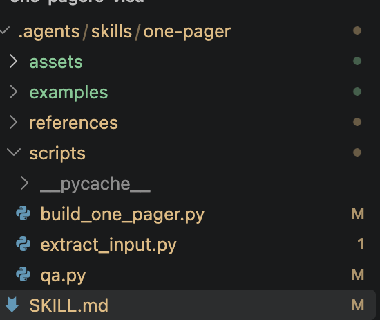
Si confío en que puedo meter el output de la API en el prompt:
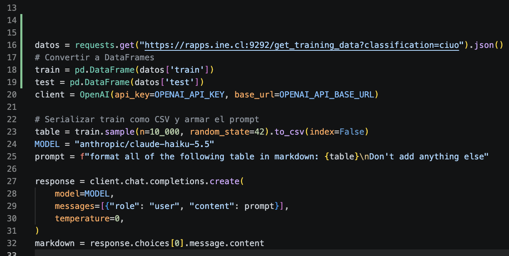
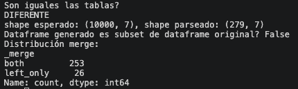
Uno cuando ve los precios de las APIs ve que suelen tener estructuras como: $4 por millón de tokens de input y $20 por millón de tokens en output.
La intuición nos dice que hay que cuidarse más del output. Más cuando nos damos cuenta que el razonamiento de los modelos se cobra a precio output.
Esto es cierto para flujos programáticos (por ejemplo, envío un request por cada fila de un dataframe pidiendo una clasificación y una explicación).
Para flujos agénticos se da vuelta la tortilla y el input empieza a pesar más
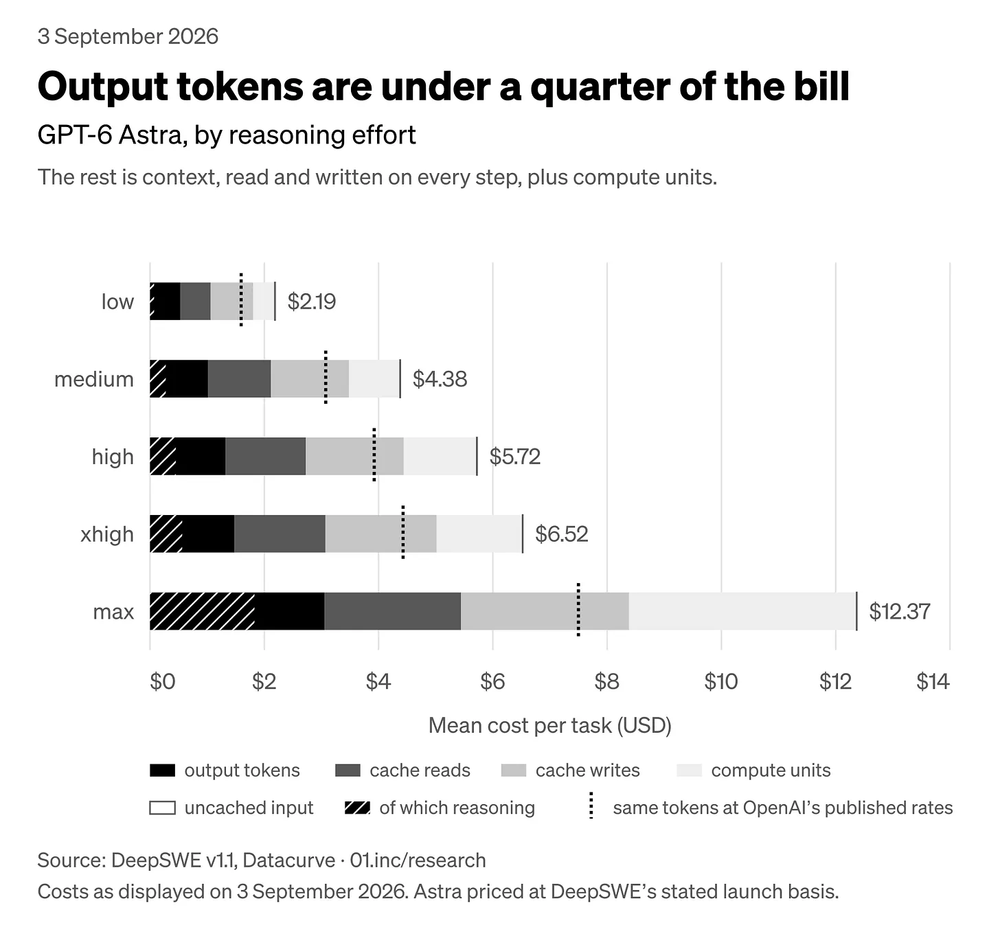
Para efectos de este proyecto implicó encontrar maneras de hacer que los modelos piensen lo justo y necesario.
Para efectos de ATF:
OJO: el caché dura un rato determinado y cuando pasa nos vuelven a cobrar a full precio de escritura de cache.
Para Claude Code en cuentas personales es 1 hora, así que mientras pase menos de una hora entre mensaje y mensaje, todo bien.
Para Claude Code a precio API (Claude ATF), el tiempo de reset del caché es de 5 minutos. Es decir, cada vez que esperamos más de 5 minutos entre interacción e interacción nos van a cobrar a 10-20x el precio que nos hubieran cobrado de otra manera y nuestros limitados tokens sufren.
Como decíamos, parte de la gracia del Open Source es que nos permite más control.
En este caso, OpenWebUI tiene el concepto de filters, código que permite modificar/trabajar:
El proyecto precisamente ocupa un inlet, un outlet y una función stream + outlet:
Como decíamos, parte de la gracia del Open Source es que nos permite más control.
En este caso, OpenWebUI tiene el concepto de filters, código que permite modificar/trabajar:
El proyecto precisamente ocupa un inlet, un outlet y una función stream + outlet:
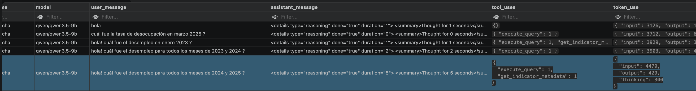
Como decíamos, parte de la gracia del Open Source es que nos permite más control.
En este caso, OpenWebUI tiene el concepto de filters, código que permite modificar/trabajar:
El proyecto precisamente ocupa un inlet, un outlet y una función stream + outlet:
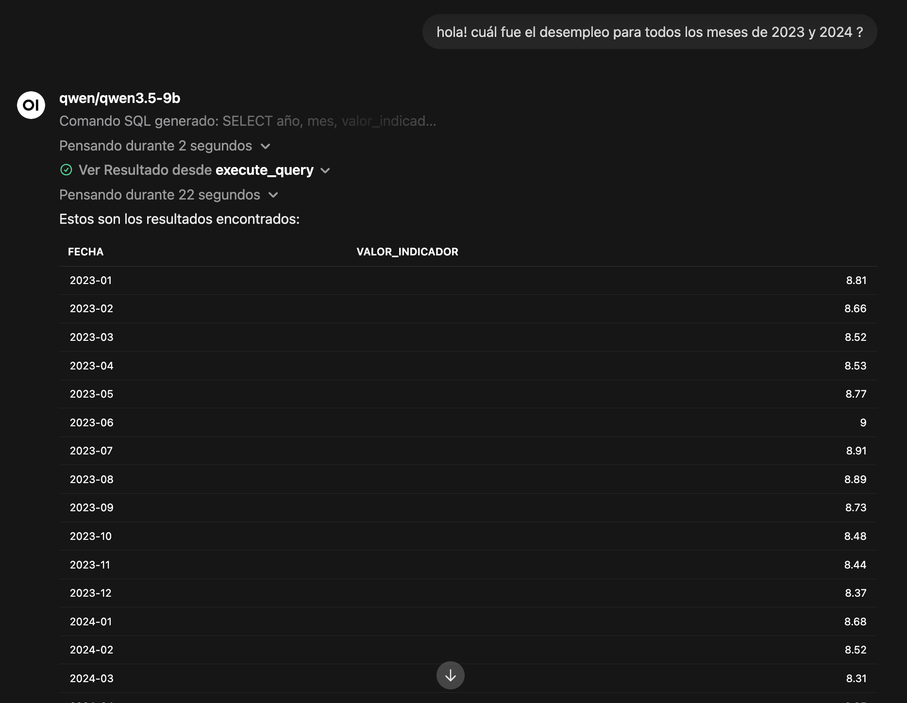
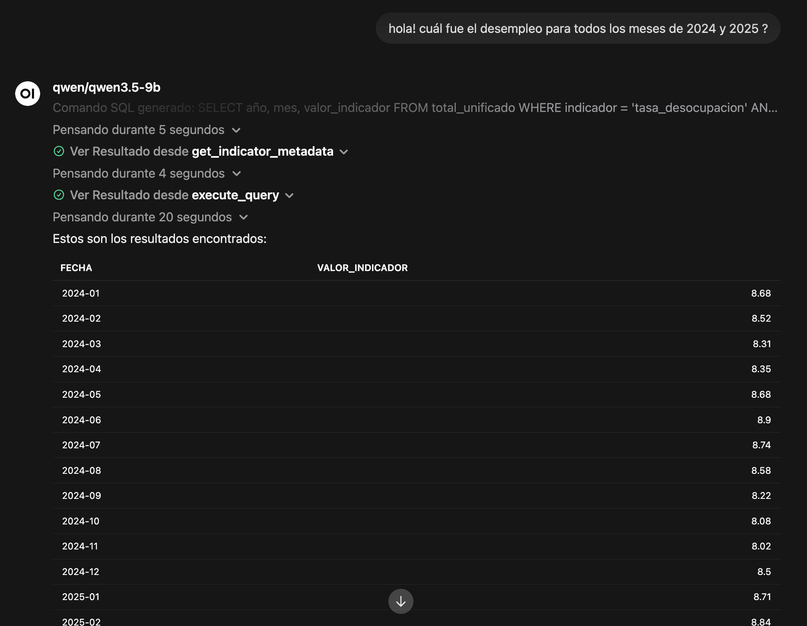
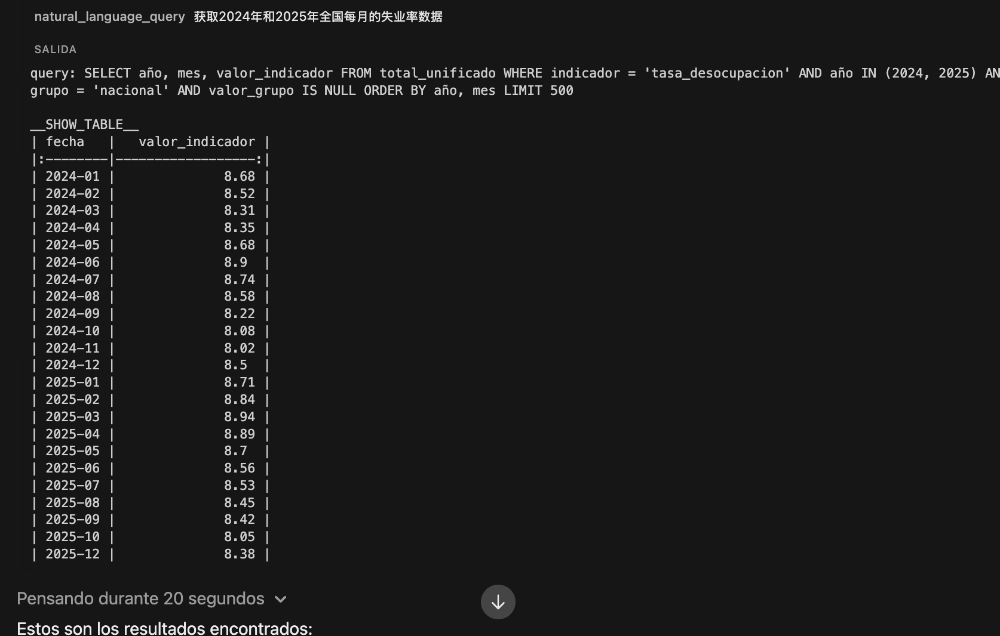
La nube nos hace muy fácil manejar acceso con IAM, RBAC, etc.
Fuera de la nube tenemos que ser más cuidadosos
Buenas prácticas:
Y si nos alcanzó el tiempo, ahora veremos cómo funciona en la práctica
13 de octubre 2026